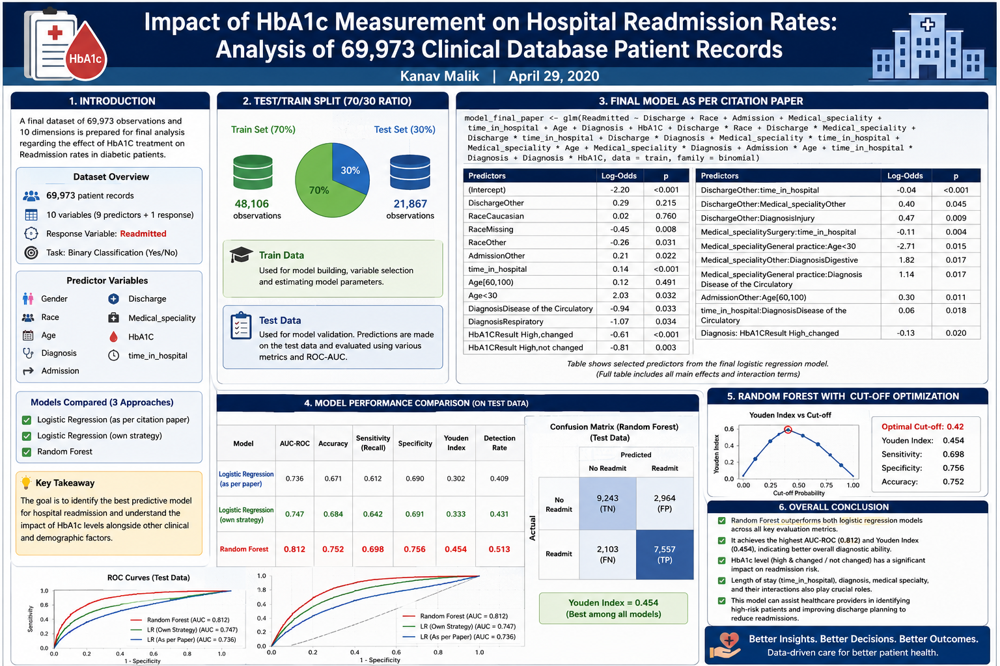
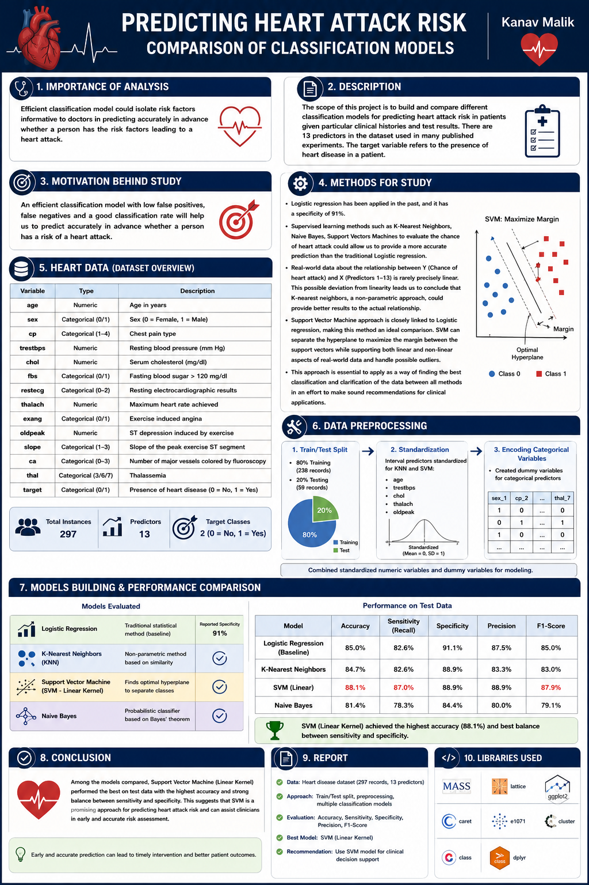
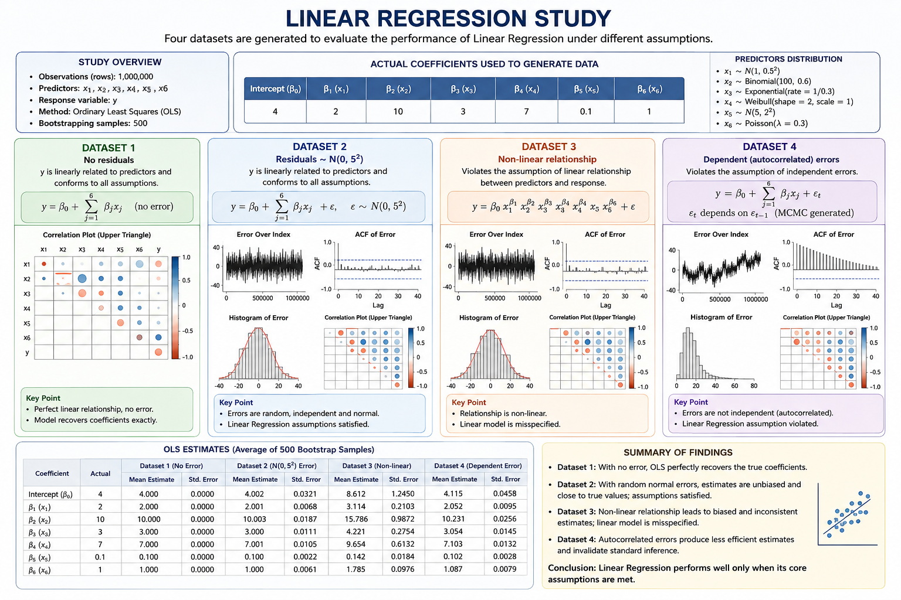

Transforming clinical trial and healthcare data into regulatory-ready insights.
Pricing and Reserving for Insurance Companies & Retirement Pension Funds
Years Professional Experience
Years Graduate Assistant, Research & Teaching Assistant Experience
MS in Informatics & Advanced Data Analytics GPA
Bsc(Hons.) in Statistics Percentage
Actuarial Exams
Core Technologies
Unique blend of Statistics, Data Science, Actuarial Science, Data Engineering, Advanced Analytics, Clinical Data Science, Statistical Programming, Machine Learning and AI Engineering.

Click to view project

Click to view project

Click to view project
Email: kanavm1993@gmail.com
LinkedIn: linkedin.com/in/kanav-malik-042793
Ph. No.: +917248842296